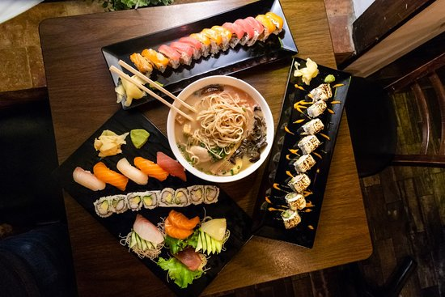
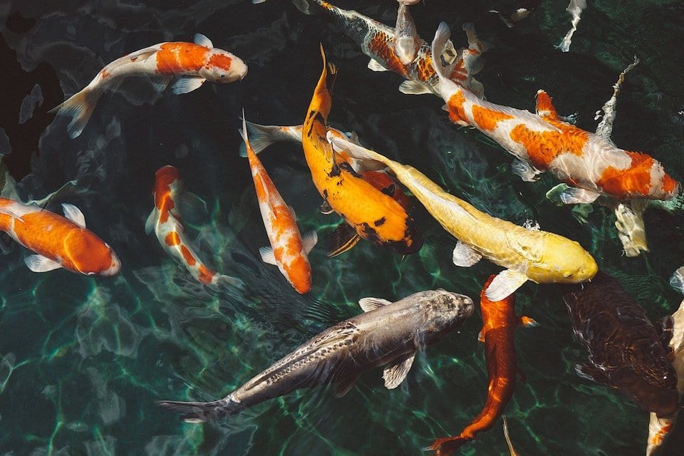

Hailed as the Land of the Rising Sun, Japan is an archipelago of 6,853 islands. Combining history and futuristic advancements, Japan is famous for creating the world’s leading electronics and car brands, while remaining deeply connected to ancient traditions. Japan is famous for natural sights like cherry blossoms and Mount Fuji, cutting-edge technology like Japanese cars and bullet trains, wacky inventions like karaoke and vending machines, cultural values like politeness and punctuality, popular anime and manga, and mouth-watering food like ramen and sushi.
The most famous Japanese food is sushi, typically eaten with soy sauce and wasabi. Beyond this, Japan is known for a vast range of gastronomic delights: noodle dishes like soba and udon, rice bowls with deep-fried shrimp tempura and pork katsudon, grilled chicken skewers of yakitori that go well with a cup of sake, and desserts like mochi and taiyaki that are just the right amount of sweet. And who can pass up a piping-hot bowl of Japanese ramen? Just remember to slurp your noodles loudly to show your appreciation to the chef!
Known as the national fish of Japan, this colourful carp called koi is famous for its ornamental beauty. Incredibly pleasing to the eyes, Japanese koi can be seen swimming in the ponds of zen gardens and temples in Japan.
They can grow up to three feet long, appearing in combinations of red, white, orange, and yellow. As they’re valued for aesthetic reasons and good luck, this isn’t a fish you’re likely to find served on a sushi platter.